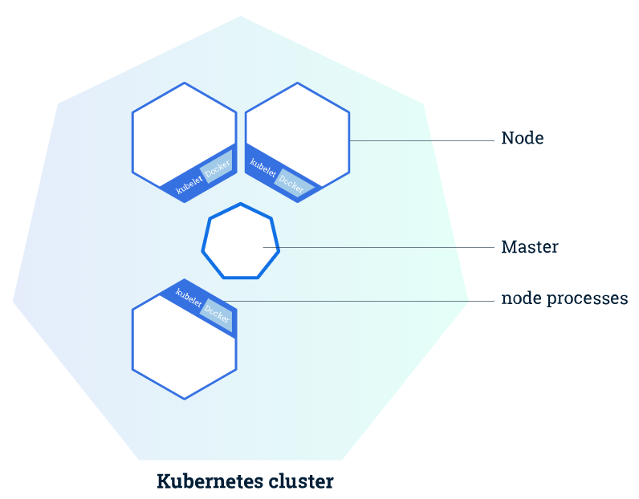
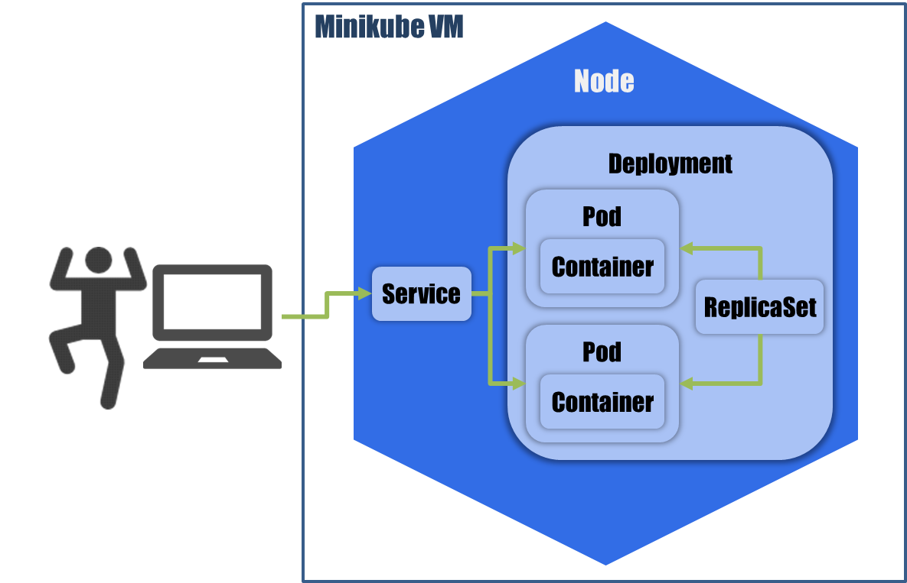

Puntos a destacar
Evolución de la tecnología informática
- Conforme al paso del tiempo las nuevas tecnologías han evolucionado y han cambiado el mundo de la informática pasando de:
Servidores físicos –> Servicios Cloud

Roberto Altamirano Martínez
¿Qué es Kubernetes?
Kubernetes fue originalmente un proyecto creado por Google, el cual tiene experiencia de más de 15 años gestionando contenedores. Ahora se trata de un proyecto de código abierto, bajo el paraguas de Cloud Native Computing Foundation (CNCF) y la Fundación Linux.
¿Qué significa Kubernetes? ¿Qué significa K8S?
El nombre Kubernetes proviene del griego y significa timonel o piloto. Es la raíz de gobernador y de cibernética. K8s es una abreviación que se obtiene al reemplazar las ocho letras “ubernete” con el número 8.
Ventajas de usar esta tecnología.
¿Donde se puede utilizar Kubernetes?
Las opciones para utilizar Kubernetes apenas tienen restricción.
Evolución de la tecnología informática
Servidores físicos –> Servicios Cloud
Estructura de un Cluster

Conceptos de Kubernetes.
El proyecto
Este proyecto necesita varios componentes para su simulación.

Esctructura de Gandhi K8S.
Servers

Estructura del Host
Utilizaremos dos containers Docker para simular un host que hará la conexión con Gandhi K8S y validara un usuario de la escuela con sus credenciales.
Tenemos dos versiones de los clientes:
Container host-samba
Responsable de montar la zona de trabajo (home) vía cifs.
Container host-nfs
Responsable de montar la zona de trabajo (home) vía nfs.
¿como inicio mi cluster?
minikube start Nombraremos las dos opciones utilizadas para desarrollar nuestro proyecto:
--driver=Nos permite especificar el hypervisor con el que vamos arrancar nuestro cluster
--extra-config=apiserver.service-node-port-range=7-30000Nos permite abrir un rango de puertos diferente al que usa por defecto minikube.
¿ Que puedo hacer en minikube ?
Ordenes para inspeccionar/interactuar con nuestro cluster.
minikube version
minikube status
minikube ip
minikube sshMinikube tiene su entorno web para poder inspeccionar la estructura del cluster.
minikube dashboard
alt cloud
¿Que puedo hacer en un cluster de minikube?
Crear un Deployment
kubectl create deployment http-prova --image=robert72004/http-prova:minikubeCrear un Service
kubectl expose deployment http-prova --type=NodePort¿Que puedo hacer en un cluster de minikube?
Escalar un Deployment
kubectl scale deployment http-prova --replicas=2 Actualizar un Deployment
kubectl set image deployments/http-prova http-prova=robert72004/http-prova:minikubeV2monitorizar un deployment, pod o service
kubectl describe deployments.apps http-prova
kubectl describe pod http-prova
kubectl describe service http-provaInteractuar con un Pod
kubectl exec -it http-prova /bin/bash